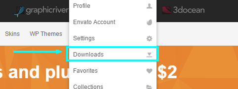
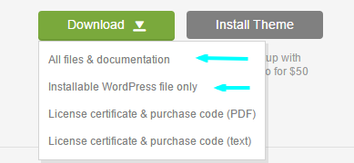
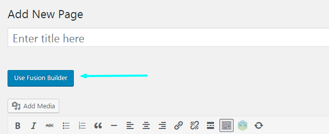
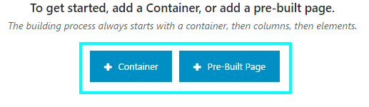
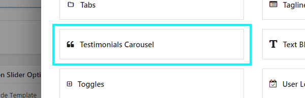
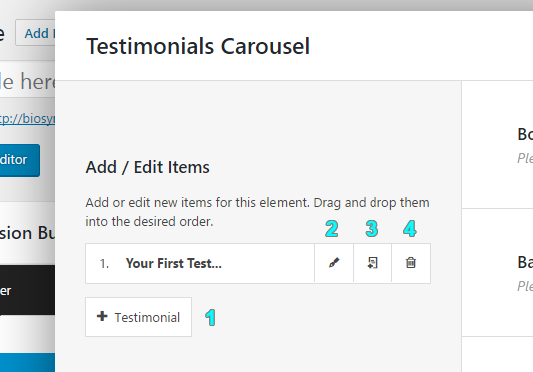
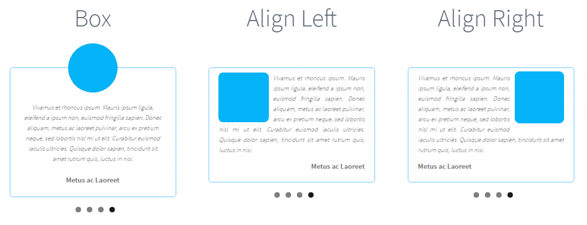

General
Testimonials Carousel Addon for Fusion Builder is a rotating carousel slider for testimonials. It is created to work with WordPress and Fusion Builder only. The slider itself is powered by FlexSlider already initialised by Fusion Builder.
The information below will guide you through the requirements, the installation and the usage of this addon.
If you need additional information, feature request or suggestion please visit our forum http://dimitar.online/testimonials-carousel/forums
Requirements
To work properly the Testimonials Carousel for Fusion Builder needs a website created with WordPress 4.6 or above and Fusion Builder 1.0 or above.
Server requirements:
- PHP 5.6 or above
- MySQL 5.6 or above
About WordPress & Documentation
This Addon is created for WordPress, which means that you need to have stable version of the CMS installed on your server to get it working.
If you are not sure what WordPress is or you need help with the installation for instance, we gathered some links that you may find helpful:
- What is WordPress? – https://wordpress.org/about/
- WordPress Documentation – https://codex.wordpress.org/Main_Page
- WordPress Forums – https://wordpress.org/support/
- Install WordPress – https://codex.wordpress.org/Installing_WordPress
- Getting Started – https://codex.wordpress.org/Getting_Started_with_WordPress
About Fusion Builder & Documentation
Testimonials Carousel is addon for Fusion Builder which means that it won’t work if you don’t have it installed on your website. You may know Fusion Builder from Theme Fusion’s most popular product which is Avada WordPress Theme.
For additional information please check the links below.
- What is Fusion Builder? – https://theme-fusion.com/
- Fusion Builder Support – https://theme-fusion.com/support/
About FlexSlider & Documentation
Flex Slider is responsive slider script used to create everything from very simple sliders to sliders with custom coded behaviours. This includes product showcases, sliding photo galleries, sliders with thumbnail navigation, video and dynamic sliders.
For additional information please check the links below.
- Flex Slider Documentation – https://woocommerce.com/flexslider/
- Flex Slider Demo Page – http://flexslider.woothemes.com/
Files and Folders Structure
Folders Structure:
- testiminials-carousel-fusion-builder – Main folder containing the plugin main php file and css and js folders
- css – This folder contains the main CSS file
- js – This folder contains the main jQuery file and preview folder
- preview – This folder contains a php file used for generating previews in Fusion Builder
PHP Files: Two PHP files are in the base of this addon. The main PHP file (inside /testiminials-carousel-fusion-builder folder) contains all the classes and functions for this plugin and the testimonials-addon-preview.php file (/js/preview folder) which is used by Fusion Builder for generating previews inside the UI.
CSS Files: This plugin uses a single CSS file located inside /css folder. It contains all of the specific stylings for the page. The file is separated into sections using:
/** General Styles **/
css styles
/** Box Layout Styles **/
css styles
etc.
JavaScript Files: Testimonials Carousel for Fusion Builder uses single Javascript file (/js folder) which sets up the responsive variables and initialises FlexSlider.
Installation Instructions
To successfully install Testimonials Carousel plugin please follow the instruction bellow:
Log into your CodeCanyon account and click on your username in the top right corner, then select the “Downloads” link.

On the Downloads page find Testimonials Carousel for Fusion Builder and click on the green “Download” button. From the dropdown you can select “All files & documentation” or “Installable WordPress file only”

All files & documentation will download the full package of the plugin including the documentation and license information. If you choose this step to install the plugin you have to unzip the archive in order to have the installation file ready for the next steps.
Installable WordPress file only will download only the installation archive which is ready for the next steps.
From this point on there two options to Upload the plugin:
Automatic, through WordPress admin. Login to wp-admin, select Plugins > Add New. On the Add Plugins page in the top left corner click “Upload Plugin” then “Choose File” and select testiminials-carousel-fusion-builder.zip
Manually, through FTP. Unzip the testiminials-carousel-fusion-builder.zip archive. Connect to your server through FTP client and put the testiminials-carousel-fusion-builder folder into the plugins folder /wp-content/plugins/.
The last step is to activate the plugin from the Plugins menu.
Usage Instructions
After successful installation we ready to add our first Testimonials Carousel, however if the Fusion Builder is not activated to this page/post we can do that from the “Use Fusion Builder” just under the title input…

…when active add Container or Pre-Build Page depending on your goals

Add Testimonials Carousel
First click on “+Element”, in the popup menu select “Testimonials Carousel”.

On the next popup we have the element settings. On the left side we have the testimonials and the controls to add, remove edit or clone and on the right side are the settings which will change the appearance of the carousel.
The left side called Add / Edit Items is very easy to control. Using the Fusion Builder UI you can add(1), edit(2), clone(3) or remove(4) any of the testimonials.

When you add new or edit, each testimonial has only tree fields Image, Title and Content. Don’t forget to click SAVE after changes!
The right side or Settings is a bit more complicated, it will help you to set up the add-on the way you want it.
Starting from the top you can set up:
Border Color – Set the testimonial border color. This field is RGBA meaning that you can control the opacity of the color.
Background Color – Set the testimonial background color. This field is RGBA meaning that you can control the opacity of the color.
Text Color – Set the testimonial Title and Content colors.
Title Font Size – Set the testimonial Title font size. Please include the unit (px or em).
Content Font Size – Set the testimonial Title font size. Please include the unit (px or em).
Select Style – Set the layout in which the testimonials are displayed. There are 3 layouts to choose from: Box, Align Left and Align Right.
Rounded Corners – Set the style in which the box corners are displayed. On – Display rounded corners. Off – Display regular corners.
Show Title – Show or Hide the Title.
Show Image – Show or Hide the Image.
Show Pagination – Show or Hide the carousel pagination.
Speed – Set the time each in testimonials page is displayed on screen. Slow – 15 seconds, Medium – 7 seconds, Fast – 3 seconds.
Designs and Demos
If you need some design inspiration please check our demos page on this link http://dimitar.online/testimonials-carousel/demos/
There you will find different setups and the settings they use so you can reproduce them quickly.
Additional Help
For any additional questions you might have please check our forums on the link below